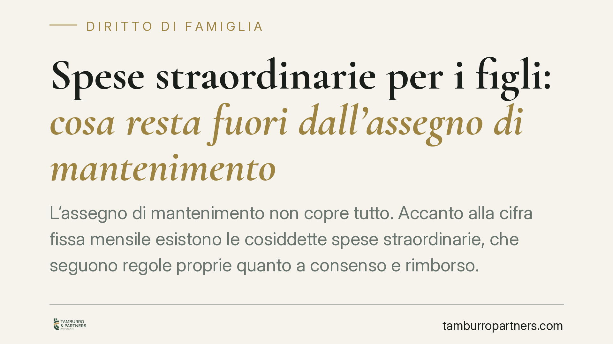

Spese straordinarie per i figli: cosa resta fuori dall'assegno di mantenimento
L'assegno di mantenimento non copre tutto. Accanto alla cifra fissa mensile esistono le cosiddette spese straordinarie, che seguono regole proprie quanto a consenso e rimborso. Comprendere la distinzione tra spese ordinarie e straordinarie evita conflitti ricorrenti tra genitori separati e contenziosi che si trascinano per anni. I protocolli dei tribunali e la Cassazione offrono criteri utili, ma non sempre uniformi.

Il principio: mantenimento diretto e assegno
L'art. 337-ter c.c. stabilisce che ciascun genitore provvede al mantenimento dei figli in misura proporzionale al proprio reddito. Quando i figli vivono prevalentemente con un genitore, l'altro versa un assegno periodico. Questo assegno, però, non esaurisce l'obbligo economico.
L'assegno copre le spese ordinarie: quelle ricorrenti e prevedibili, legate alla quotidianità del figlio. Rientrano in questa categoria vitto, abbigliamento, materiale scolastico di base, spese per l'igiene personale, ricariche telefoniche, piccole uscite ricreative. Si tratta di costi stimabili in anticipo, che il genitore convivente sostiene senza dover chiedere nulla all'altro.
Cosa sono le spese straordinarie
Le spese straordinarie sono quelle non ricorrenti, non prevedibili o di importo rilevante, estranee alla gestione ordinaria. Non essendo state considerate nel calcolo dell'assegno, vanno ripartite a parte, di norma al 50% salvo diverso accordo o diversa statuizione del giudice.
I tribunali hanno adottato protocolli per ridurre l'incertezza, ma non coincidono. Il Protocollo del Tribunale di Milano e quello del Tribunale di Roma classificano le spese in due gruppi:
- spese straordinarie che richiedono il consenso preventivo dell'altro genitore;
- spese straordinarie obbligatorie, da rimborsare anche senza previo accordo.
La linea di confine varia. A Roma, per esempio, alcune spese mediche o scolastiche sono considerate dovute senza necessità di concertazione; a Milano la ripartizione delle categorie segue criteri in parte differenti. È quindi essenziale verificare il protocollo applicabile al proprio foro e, soprattutto, il contenuto del provvedimento del giudice, che prevale sul protocollo.
Esempi tipici
Tra le spese comunemente qualificate come straordinarie figurano:
- rette universitarie, corsi di specializzazione, soggiorni studio all'estero;
- cure odontoiatriche, ortodontiche, interventi non coperti dal SSN, occhiali, lenti;
- attività sportive e ricreative continuative con costi di iscrizione e attrezzatura;
- viaggi di istruzione, gite scolastiche;
- acquisto di dispositivi informatici necessari allo studio;
- conseguimento della patente.
La qualificazione non è automatica: dipende dal tenore di vita familiare pregresso e dalla ricorrenza effettiva della spesa.
Il nodo del consenso e del rimborso
Il tema più litigioso è il consenso preventivo. La Corte di Cassazione ha chiarito che, per le spese straordinarie non concordate ma rispondenti all'interesse del figlio, il genitore che le ha anticipate ha comunque diritto al rimborso della quota a carico dell'altro, quando si tratti di esborsi necessari e non voluttuari.
Diverso è il caso delle spese straordinarie voluttuarie o per scelte educative significative: qui il consenso preventivo diventa condizione per il rimborso, perché entrambi i genitori hanno diritto di partecipare alle decisioni che incidono in modo rilevante sulla vita del figlio. Un corso di equitazione costoso deciso unilateralmente può non essere rimborsabile se l'altro genitore, interpellato, avrebbe potuto legittimamente opporsi.
Sul piano processuale, l'art. 473-bis.38 c.p.c. consente di agire per il recupero delle spese straordinarie già quantificate nel titolo senza necessità di un nuovo giudizio di merito, quando l'an (il se) e il criterio di ripartizione risultano già definiti. Resta ferma, per le voci contestate, la necessità di un accertamento.
Implicazioni pratiche
Per il genitore convivente, anticipare spese rilevanti senza documentazione o senza aver interpellato l'altro espone al rischio di non ottenere il rimborso. Per il genitore non convivente, ignorare richieste di spese necessarie e documentate non evita l'obbligo e può generare interessi e spese legali.
Cosa fare in concreto
- Verificate il protocollo del vostro tribunale e, prima ancora, il testo esatto del provvedimento di separazione o divorzio: è quello a fare legge tra le parti.
- Richiedete il consenso scritto (anche via messaggistica) per ogni spesa non ricorrente di importo significativo, prima di sostenerla.
- Conservate ogni giustificativo: fatture, ricevute, iscrizioni intestate al figlio.
- Distinguete per iscritto spese necessarie e spese voluttuarie: la qualificazione incide sul diritto al rimborso.
- Fissate tempi e modalità di rimborso in un accordo integrativo, se il titolo originario è generico.
Consigliamo di definire fin dalla separazione un elenco dettagliato delle categorie di spesa e delle percentuali di ripartizione: la chiarezza iniziale previene gran parte del contenzioso successivo.
Contributo informativo a cura di Tamburro & Partners - Avv. Giuseppe Tamburro. Non costituisce parere legale.
Ogni famiglia ha il suo equilibrio.
Separazione, divorzio, affidamento, assegno: se vuoi un confronto riservato su una specifica situazione, scrivi allo studio. Ti rispondiamo entro un giorno lavorativo.